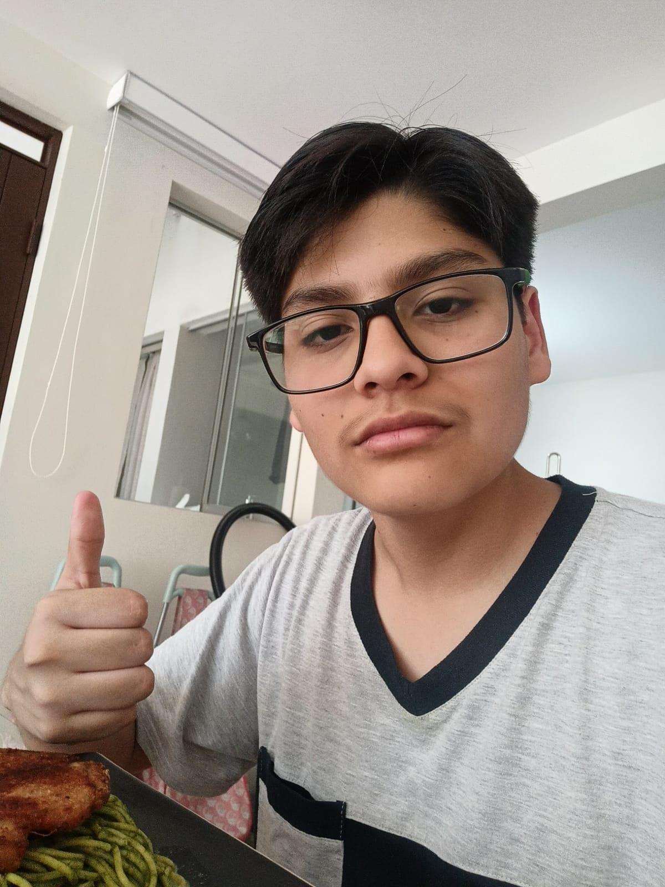

🎵
Música
Soy bastante variado, pero en especial me gustan el rock y el pop. Eso sí: el kpop no, con toda mi existencia, y un poco del reguetón actual tampoco.
Cargando mi mundo...
¡Hola, mundo! 👋
Soy |
Bienvenido a mi pequeño mundo digital, como yo jeje. Te invito a pasar, explorar y conocerme un poquitito más.
“No te rindas jamás: la verdadera fuerza está en levantarte una y otra vez y mantener la frente en alto, a pesar de todo y de todos.” ❤️💚 — Nicolás SaldarriagaEmpezar el viaje ↓

¡Holaaa! Me llamo Nicolás Saldarriaga, aunque todos me dicen Saldarriaga o Salda (soy más conocido por mi apellido que por mi nombre). Nací el 14 de octubre de 2011 en Lima, Perú, tengo 15 años y estudio en Clemente Althaus School desde tercer grado de primaria.
Me considero alguien bastante extrovertido a quien no se le dificulta hablar con nadie ni hacer amistades (algo que valoro mucho). Siempre puedes confiar en mí para tus más grandes secretos o para simplemente escucharte o aconsejarte donde sea que esté.
Casi todos me describen como una persona alegre y de buen corazón, y como un buen amigo en quien siempre pueden confiar. Me gusta hacer reír a los demás y ayudar cuando puedo, incluso si eso significa poner su sonrisa sobre la mía: mi mejor regalo es verlos sonreír a ellos.
Biología e inglés: se me dan demasiado bien y los disfruto un montón.
Matemática e historia: soy bueno en ellos, pero no son lo mío.
Física, física y física. ODIO FÍSICA, sobre todo tensiones, simplemente no lo puedo entender.
Soy bastante variado, pero en especial me gustan el rock y el pop. Eso sí: el kpop no, con toda mi existencia, y un poco del reguetón actual tampoco.
Me encantan las series animadas y animes (no soy otaku 😅) como One Piece (que tenga más de 1000 capítulos no es excusa para lo buena que es) y Tokyo Revengers (una amiga me lo recomendó y, 10/10).
Mis favoritos son Brawl Stars, Roblox, Hollow Knight y LoL, pero también juego otras cosas variadas como Clash Royale, Fall Guys, Crash Bandicoot, Geometry Dash, etc. (aunque últimamente casi no los juego).
Soy de esas pocas personas a las que les gusta ver el fútbol, pero odian jugarlo. Eso sí, soy bastante bueno en vóley, karate, tenis y natación (que de pequeño odiaba y ahora me encanta).
Pasta 100 %. En donde sea, cuando sea y como sea, aunque soy de esas personas que come casi de todo (menos arroz con pollo y seco, no soy fan del culantro) y parece que no tengo fondo (pero me gusta comer, así que no hay problema).
Jugar videojuegos, hablar con mis amigos y, a veces, escuchar música mientras dibujo (aunque últimamente no lo he practicado mucho).
Mi vida ha tenido un sinfín de riesgos... y todo indica que seguirá así 😅
 A los 5 años
A los 5 añosCasi pierdo el dedo meñique izquierdo en un accidente del kinder. Ahí empezó mi historial de riesgos.
 Fin de primaria
Fin de primariaSin lugar a duda marcó una nueva etapa y un comienzo para mí: conocí el doble de personas, y algunas siguen siendo muy especiales todavía.
 Justo después
Justo despuésMe fracturé 3 dedos porque un arco de metal me cayó encima, y estuve enyesado 1 mes. Como dije, mi vida ha tenido un sinfín de riesgos...
Nivel: avanzado
Nivel: muy bueno
Nivel: excelente
Nivel: superpoder ⚡
🚀 Lo que estoy aprendiendo ahora: comunicación asertiva (tengo que mejorar mi tono de voz...)
Algo que realmente me asusta es el programa de diploma (IB), por eso desde ahora me estoy preparando para lograr buenas calificaciones y graduarme como uno de los mejores alumnos.
Después, quiero entrar a una buena universidad (de preferencia con beca) para estudiar una carrera que involucre biología, como medicina.
Finalmente, quisiera viajar y conocer el mundo (nunca he salido de Perú), e irme a trabajar y conseguir títulos en el extranjero.

Sin duda mi primera prioridad: daría mi vida por las personas que me dieron a luz. Mi mamá es como mi guía espiritual, siempre evitando que caiga en malos pasos y educándome y corrigiéndome en mi aprendizaje. Mi papá es como un compañero de guía: lo veo más como mi mejor amigo que como mi papá, siempre puedes confiar en él para favores, consejos y como dúo de videojuegos jeje.

Tengo 2 círculos de amistades, pero los más especiales para mí son Martin y Santiago, con quienes entablé una amistad bastante duradera y saludable. Y en cuanto a las chicas, Zoe es como mi brother, mi mano derecha, mi mínimo común múltiplo, al igual que Alexa, que siempre se ríe de lo que sea que haga.

Cómo olvidarla: el día que llegó no me lo creía, ya que mi mamá siempre odió tener mascotas por el pelo que dejan. Ahora no nos imaginamos cómo sería vivir sin esta gata arisca que solo duerme y come todo el día (y a la que le encanta el paté).
👦 Soy hijo único: a veces me gusta, pero otras veces se siente solitario (aunque tengo a mi gatita como apoyo 🐾).
Algo que pocas personas saben de mí...